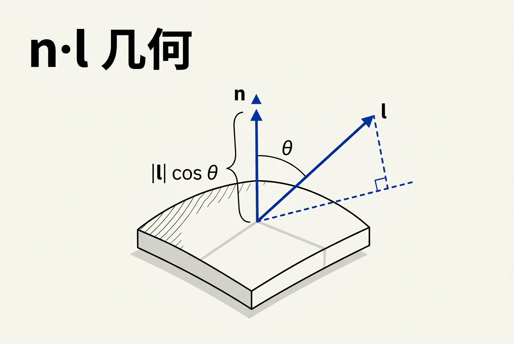
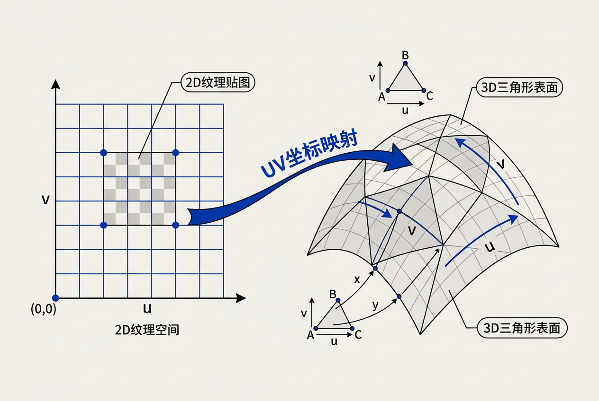
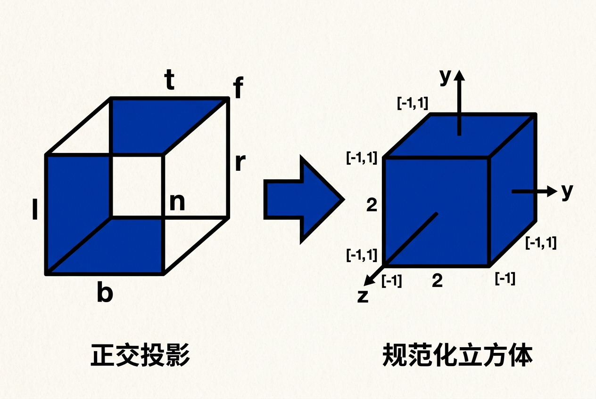
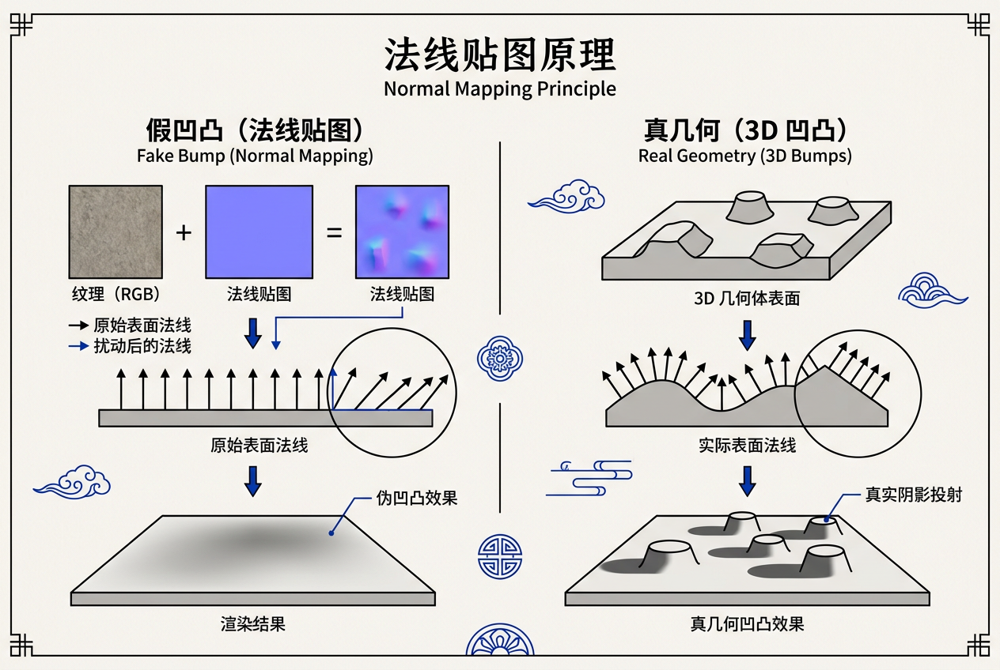
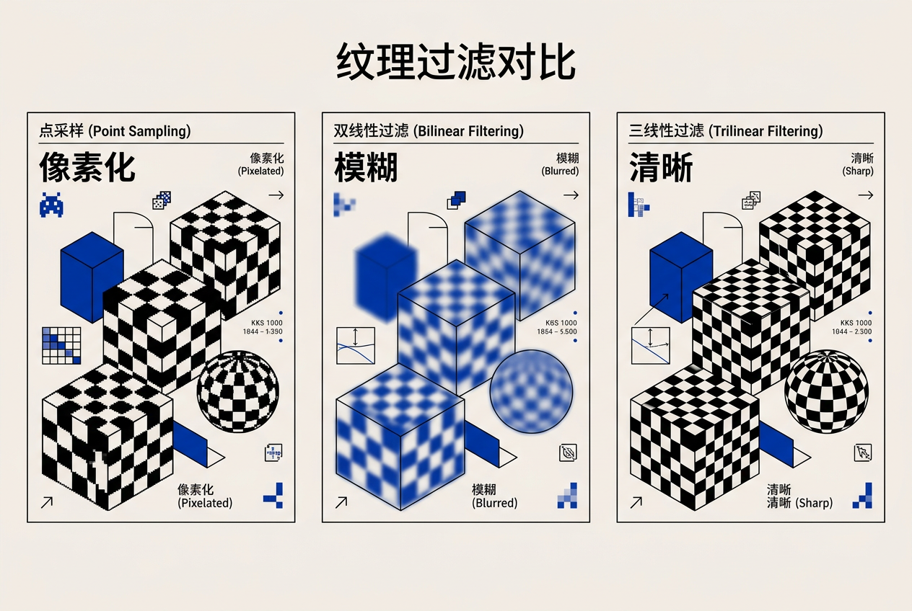

第17章：使用图形硬件 — 零基础讲义
讲义说明
本讲义基于 Steve Marschner & Peter Shirley 所著《虎书5》第5版第17章（p.461-501）。
核心故事：你作为一个程序员，怎么让 GPU 帮你画一个三角形？
本章从这个问题出发，一步步拆解 GPU 的完整工作流程。
本版插画采用 Guizang 材质插画风格重新绘制。
17.0 故事线：我想画一个三角形
为什么需要这个？
所有图形编程，都从这里开始：你有一个想法——画一个三角形在屏幕上。
但你的 CPU 不会画三角形。CPU 只会算数。你的 GPU 会画三角形，但它听不懂 C++。所以你需要：把"画三角形"翻译成 GPU 能听懂的命令。

Step 1：先定义三角形的三个点
三角形 ABC：
A = (-0.5, -0.5, 0.0) 左下
B = ( 0.5, -0.5, 0.0) 右下
C = ( 0.0, 0.5, 0.0) 上每个点的坐标是 (x, y, z)，范围在 [-1, 1] 之间。这是最简单的三角形——在屏幕中心。
Step 2：这三个点怎么到 GPU？
[C++ 代码]
↓ 编译、链接
[应用程序] ← 你在这
↓
[CPU 把顶点数据拷贝到显存]
↓
[GPU 拿到数据，开始画] ← 本章剩下的篇幅全在讲这一步Step 3：GPU 内部发生了什么？
[CPU] 说："画三角形，顶点是 A, B, C"
↓
[GPU 执行管线]：
┌─────────────────────────────────────────────┐
│ 1. 顶点处理 (Vertex Shader) │
│ └─ 把 A, B, C 从"模型坐标"→"屏幕坐标" │
│ │
│ 2. 光栅化 (Rasterization) │
│ └─ "三角形变像素" │
│ └─ 算出三角形覆盖了哪些像素点 │
│ │
│ 3. 片段处理 (Fragment Shader) │
│ └─ 给每个像素算颜色 │
│ │
│ 4. 混合输出 (Blending) │
│ └─ 把颜色写到屏幕缓冲区 │
└─────────────────────────────────────────────┘
↓
[屏幕上出现一个三角形]17.1 异构多处理（Heterogeneous Multiprocessing）
17.1.1 为什么 CPU 和 GPU 要分开？
CPU 是"总经理"——什么都懂但只有几个脑袋；GPU 是"流水线工人"——只做一件事但有几万个。
因为设计目标完全不同！CPU 要处理各种随机任务（打开网页、运行操作系统、响应键盘），所以需要复杂的控制逻辑、分支预测、大缓存。GPU 只做一件事——大规模并行计算，所以它可以把 80% 的芯片面积都用来做计算单元。合在一起的结果就是两者都做不好。
| 维度 | CPU（主机/Host） | GPU（设备/Device） |
|---|---|---|
| 核数 | 4~32 个 | 几千个（SM/CU） |
| 每核能力 | 强（乱序执行、大缓存、复杂分支预测） | 弱（单指令多线程，分支昂贵） |
| 内存 | 系统 RAM（几十 GB） | 显存 VRAM（几~几十 GB） |
| 通信 | CPU ←PCIe总线→ GPU | GPU 内部极快 |
| 擅长 | 控制流、数据管理、串行任务 | 数据并行大规模计算（矩阵乘法、光栅化） |
| 画三角形？ | 能画但极慢（CPU 渲染） | 光栅化是硬件天生技能 |
17.1.2 工作模式：Host ↔ Device
Host (CPU) 内存 Device (GPU) 显存
┌───────────┐ ┌────────────┐
│ 顶点数据 │─────PCIe─────→│ 顶点缓冲 │
│ 纹理图片 │─────PCIe─────→│ 纹理对象 │
│ Shader代码 │─────编译─────→│ Shader程序 │
│ 绘制命令 │─────PCIe─────→│ 命令队列 │
└───────────┘ └────────────┘17.1.3 为什么 PCIe 这么慢？数字感知
| 操作 | 大概耗时 | 类比 |
|---|---|---|
| CPU 执行一条指令 | ~0.3 ns | 眨一下眼睛的十亿分之一 |
| CPU 读取 L1 缓存 | ~1 ns | 心跳一次的百万分之一 |
| CPU 读取内存 RAM | ~100 ns | 一次呼吸的百万分之一 |
| PCIe 4.0 ×16 传输 1MB | ~60 μs | 苍蝇扇一下翅膀 |
| PCIe 传输整帧纹理 (8MB) | ~0.5 ms | 你能看清的时间 |
| 一帧渲染时间 (60fps) | ~16.7 ms | 一帧动画的极限 |
17.2 图形管线（GPU Pipeline）
17.2.1 为什么需要管线？
想象一家工厂：如果你让一个工人"先把铁矿石炼成铁，再把铁铸成形状，再打磨抛光"，他得一个一个来。但如果你把这些人排成一条线——第一个人炼铁、第二个人铸造、第三个人打磨——你可以同时处理多个工件。图形管线也是同样的道理：每个阶段可以同时处理不同的数据。
17.2.2 四个阶段全览
┌─────────────────────────────────────────────────────────┐
│ "我想画一个三角形" │
│ ↓ │
│ [应用程序] ← 设置好顶点、Shader、状态 │
│ ↓ │
│ ╔═════════════════════════════════════════════════════╗ │
│ ║ 阶段1：顶点处理 (Vertex Shader) ║ │
│ ║ 输入：每个顶点 (位置、颜色、法线...) ║ │
│ ║ 输出：变换后的顶点（屏幕坐标） ║ │
│ ║ 可编程：是——你写 GLSL 代码 ║ │
│ ╚═════════════════════════════════════════════════════╝ │
│ ↓ │
│ ╔═════════════════════════════════════════════════════╗ │
│ ║ 阶段2：光栅化 (Rasterization) — 硬件固定 ║ │
│ ║ 输入：3个屏幕坐标顶点 ║ │
│ ║ 输出：覆盖的所有像素（片段 Fragment） ║ │
│ ║ 本质：三角形变像素 ║ │
│ ║ 可编程：否！这是硬件做好的 ║ │
│ ╚═════════════════════════════════════════════════════╝ │
│ ↓ │
│ ╔═════════════════════════════════════════════════════╗ │
│ ║ 阶段3：片段处理 (Fragment Shader) ║ │
│ ║ 输入：每个像素的位置、插值后的属性 + 纹理采样 ║ │
│ ║ 输出：每个像素的颜色（RGBA） ║ │
│ ║ 可编程：是——你也写 GLSL 代码 ║ │
│ ╚═════════════════════════════════════════════════════╝ │
│ ↓ │
│ ╔═════════════════════════════════════════════════════╗ │
│ ║ 阶段4：混合 (Blending) — 硬件固定 ║ │
│ ║ 输入：新像素颜色 + 帧缓冲区已有颜色 ║ │
│ ║ 输出：→ 帧缓冲区的最终颜色 ║ │
│ ║ 公式：output = src × srcFactor + dst × dstFactor ║ │
│ ╚═════════════════════════════════════════════════════╝ │
│ ↓ │
│ [屏幕上！] │
└─────────────────────────────────────────────────────────┘17.2.3 光栅化详解：三角形怎么变成像素？
光栅化 = 回答一个问题："这个三角形覆盖了屏幕上的哪些像素点？"
三角形三个顶点：
A(-0.5, -0.5) B(0.5, -0.5) C(0.0, 0.5)
屏幕像素网格:
┌────┬────┬────┬────┬────┐
│ │ │ │ │ │
├────┼────┼────┼────┼────┤
│ │ │ ██ │ ██ │ │ ██ = 被三角形覆盖的像素
├────┼────┼────┼────┼────┤
│ │ ██ │ ██ │ ██ │ │ 每个 ██ 会生成一个 Fragment（片段）
├────┼────┼────┼────┼────┤
│ │ ██ │ ██ │ │ │ 每个 Fragment 会执行一次 Fragment Shader
├────┼────┼────┼────┼────┤
│ │ │ │ │ │
└────┴────┴────┴────┴────┘光栅化还做了一件重要的事：插值。三角形内部的每个像素的颜色不是随便算的——是根据三个顶点的值做重心坐标插值。
举例：三个顶点颜色不同
A=红色, B=绿色, C=蓝色
→ 三角形内部的像素颜色是"从红渐变到绿再到蓝"
→ 这叫 Gouraud Shading（高洛德着色）
→ 插值是硬件做的，你不需要写代码因为光栅化的效率完全取决于硬件实现——判断像素在三角形内的算法（如边函数法 Edge Function）已经被研究了30年，所有 GPU 厂商都采用几乎相同的硬件电路。如果让程序员自己写，要么慢10倍，要么有 bug。所以 GPU 厂商把光栅化做成固定硬件，只给你留出"顶点处理"和"片段处理"两个可编程接口。
17.3 Shader 编程（Shader Programming）
17.3.1 为什么需要 Shader？
早期 GPU 的管线是固定的（fixed-function pipeline）——每个阶段做什么是焊死在硬件里的。后来人们发现：不同的游戏需要不同的光照效果，固定的管线太死板了。于是 GPU 厂商开放了部分阶段的编程接口——这就是 Shader。
17.3.2 两个可编程阶段
Shader = 在 GPU 上运行的小程序

| Shader | 执行次数 | 输入 | 输出 | 你写的代码做 |
|---|---|---|---|---|
| Vertex Shader | 每个顶点一次 | 顶点属性（位置、颜色、法线） | 变换后的坐标 + 传递给 Fragment 的数据 | 坐标变换、逐顶点计算 |
| Fragment Shader | 每个像素一次 | 插值后的属性 + 纹理采样 | 最终颜色 | 光照计算、纹理混合、颜色输出 |
17.3.3 第一个 Vertex Shader：让三角形动起来
目标：把三角形从模型坐标系变换到屏幕坐标系
// ====== Vertex Shader ======
// 执行次数：每帧对三角形的 3 个顶点各执行一次 = 3 次
// 输入：in_ 开头的变量 = 每个顶点自带的数据
layout(location = 0) in vec3 in_Position; // 顶点位置（来自 CPU 传的 VBO）
layout(location = 1) in vec3 in_Color; // 顶点颜色（来自 CPU 传的 VBO）
// 输出：out 关键字 = 传到 Fragment Shader 的数据
out vec3 vColor; // 顶点颜色 → 经过光栅化插值 → 到 Fragment
// Uniform = "一次绘制调用中不变"的全局变量
uniform mat4 projMatrix; // 投影矩阵（CPU 传入，把 3D 点映射到屏幕）
// main 函数：GPU 对每个顶点自动调用
void main(void)
{
// 把顶点颜色传递给 Fragment Shader
vColor = in_Color;
// 用投影矩阵把 3D 位置变换到屏幕坐标
// vec4(位置, 1.0) = 齐次坐标表示
// gl_Position = 内建变量，GPU 用这个值做光栅化
gl_Position = projMatrix * vec4(in_Position, 1.0);
}17.3.4 对应的 Fragment Shader：给每个像素上色
// ====== Fragment Shader ======
// 执行次数：每帧对三角形覆盖的每个像素各执行一次
// 如果三角形覆盖了 1000 个像素 = 执行 1000 次
// 输入：从 Vertex Shader 传来的数据（经过光栅化插值）
// 三个顶点的 vColor 分别是红、绿、蓝 → 三角形中间的 vColor 是渐变混合色
in vec3 vColor;
// 输出：最终要显示的颜色
out vec4 fragmentColor; // RGBA 颜色
void main(void)
{
// 直接使用插值后的颜色
// vec4(颜色, 透明度) — 透明度设为 1.0（不透明）
fragmentColor = vec4(vColor, 1.0);
}- Vertex Shader = 定好三角形的三个角在哪里、什么颜色
- 光栅化（硬件做）= 算出三角形内部有哪些像素
- Fragment Shader = 给每个像素最终决定颜色
17.3.5 Per-Vertex 着色 vs Per-Fragment 着色
Per-Vertex 着色（Gouraud Shading）：
顶点处算光照 → 光栅化插值 → 三角形内部平滑过渡
优点：快（每个顶点算一次，中间插值）
缺点：大三角形时中间的光照细节丢失
举例：一个大三角形，顶点处光源在左边
→ 顶点算出来很亮
→ 但三角形中心恰好有个高光 → 被插值抹平了 → 看不见Per-Fragment 着色（Phong Shading）：
顶点处只传法线 → 光栅化插值法线 → 每个像素重新算光照
优点：每个像素的光照都准
缺点：慢一点（每个像素都要算一遍光照）// ====== Per-Fragment 着色的 Fragment Shader ======
// 输入：插值后的法线、半向量、光方向
in vec4 normal; // 法线（已插值）
in vec3 half; // 半向量 = 视线 + 光源方向 归一化
in vec3 lightdir; // 光源方向
// Uniform 变量：一次 draw call 不变
uniform vec3 Ia; // 环境光强度
uniform vec3 ka; // 环境光反射系数
uniform vec3 kd; // 漫反射系数
uniform vec3 ks; // 镜面反射系数
uniform float phongExp; // 镜面指数（越大高光越集中）
uniform vec3 lightIntensity; // 光源强度
void main(void)
{
// ---- 归一化：保证方向向量的长度 = 1 ----
vec3 n = normalize(normal.xyz);
vec3 h = normalize(half);
vec3 l = normalize(lightdir);
// ---- Blinn-Phong 光照模型（逐像素） ----
// 环境光：不管光源方向，保证背光面有基本亮度
vec3 ambient = ka * Ia;
// 漫反射：光源方向越正对表面越亮，*max(0, n·l) 保证背面不亮
vec3 diffuse = kd * lightIntensity * max(0.0, dot(n, l));
// 镜面反射：半向量越接近法线越亮，pow(...) 控制高光大小
vec3 specular = ks * lightIntensity * pow(max(0.0, dot(n, h)), phongExp);
// ---- 合成最终颜色 ----
fragmentColor = vec4(ambient + diffuse + specular, 1.0);
}17.3.6 Uniform 变量的三种来源
| 来源 | 关键字 | 谁提供 | 每次变化时机 |
|---|---|---|---|
| 内建变量 | gl_Position, gl_FragCoord | GPU | 自动 |
| 顶点属性（Attribute） | in_*（如 in_Position） | VBO 数据 | 每个顶点不同 |
| Uniform | uniform（如 projMatrix） | CPU 调用 glUniform*() | 一次 draw call 不变 |
17.4 顶点数据（Vertex Data）
17.4.1 为什么需要 VBO？
你要画一个三角形，GPU 需要知道三个顶点的位置。但你不可能从 C++ 里每一帧都把这三个点"塞"给 GPU——那太慢了。解决方案：先把数据存在 GPU 的显存里，画的时候 GPU 直接读显存。这个存放顶点数据的显存缓冲区就是 VBO（Vertex Buffer Object）。
17.4.2 VBO = Vertex Buffer Object
VBO = GPU 显存里的一块缓冲区，专门存顶点数据。
1. 你的 C++ 程序定义了一个三角形（3 个顶点 = 位置 + 颜色 + 法线...）
2. 这些数据在 CPU 内存里（系统 RAM）
3. 你调 glBufferData() → 数据从 RAM 拷贝到 VRAM（VBO）
4. 你调 glDrawArrays() → GPU 从 VBO 读数据执行管线C++ 端的顶点结构体：
// 定义一个顶点的数据结构
struct Vertex {
float pos[3]; // 位置 x, y, z (3 × 4 = 12 字节)
float color[3]; // 颜色 r, g, b (3 × 4 = 12 字节)
float uv[2]; // 纹理坐标 u, v (2 × 4 = 8 字节)
// 每个顶点总共：12 + 12 + 8 = 32 字节
};
交错布局（Interleaved）的内存排列：
显存中连续排列（每个顶点的所有字段挨着）：
┌───────┬───────┬───────┬───────┬───────┬───────┬───────┬───────┐
│ pos.x │ pos.y │ pos.z │ col.r │ col.g │ col.b │ uv.u │ uv.v │
├───────┼───────┼───────┼───────┼───────┼───────┼───────┼───────┤
│ <----------- 顶点 0 的 8 个 float = 32 字节 ------------> │
├───────┼───────┼───────┼───────┼───────┼───────┼───────┼───────┤
│ 顶点 1 .............................................. │
├───────┼───────┼───────┼───────┼───────┼───────┼───────┼───────┤
│ 顶点 2 .............................................. │
└───────┴───────┴───────┴───────┴───────┴───────┴───────┴───────┘17.4.3 创建 VBO 的完整代码（每行中文注释）
// ---- 步骤 1：定义三角形数据 ----
// 三个顶点，每个顶点 8 个 float（位置3 + 颜色3 + 纹理2）
float vertices[] = {
// 位置 x,y,z 颜色 r,g,b 纹理 u,v
-0.5f, -0.5f, 0.0f, 1.0f, 0.0f, 0.0f, 0.0f, 0.0f, // 顶点 A：左下，红色
0.5f, -0.5f, 0.0f, 0.0f, 1.0f, 0.0f, 1.0f, 0.0f, // 顶点 B：右下，绿色
0.0f, 0.5f, 0.0f, 0.0f, 0.0f, 1.0f, 0.5f, 1.0f // 顶点 C：顶上，蓝色
};
// ---- 步骤 2：生成 VBO 对象 ----
GLuint vbo; // 声明 VBO 句柄（一个无符号整数 ID）
glGenBuffers(1, &vbo); // 让 OpenGL 分配一个 VBO，把 ID 存入 vbo
// ---- 步骤 3：绑定 VBO ----
glBindBuffer(GL_ARRAY_BUFFER, vbo); // 把 vbo 绑定到"顶点数组缓冲"目标
// 绑定 = "接下来对这个目标的操作都是对 vbo 做的"
// ---- 步骤 4：把数据从 RAM 传到 VRAM ----
glBufferData(
GL_ARRAY_BUFFER, // 目标：顶点数组缓冲
sizeof(vertices), // 数据大小（字节数）：8个float×3顶点×4字节 = 96字节
vertices, // CPU 端数据指针
GL_STATIC_DRAW // 提示：数据不常改（静态），GPU 可以优化存储位置
);
// ---- 步骤 5：生成 VAO（顶点数组对象） ----
// VAO 像一个"数据线配置模板"——记住"位置在第 0 个槽位、颜色在第 1 个槽位..."
GLuint vao;
glGenVertexArrays(1, &vao);
glBindVertexArray(vao); // 绑定 VAO，后续 VertexAttribPointer 配置都记在这个 VAO 里17.4.4 glVertexAttribPointer：6 个参数逐项拆解
这个函数是 VBO 编程中最重要也是最容易搞错的地方。
它的作用：告诉 GPU "VBO 里的数据是怎么排列的，每个属性从哪里开始读"。
// 函数签名：
void glVertexAttribPointer(
GLuint index, // ① 属性索引（对应 Vertex Shader 里的 layout(location = x)）
GLint size, // ② 每个属性由几个分量组成（1/2/3/4）
GLenum type, // ③ 每个分量的数据类型
GLboolean normalized, // ④ 整数类型时是否归一化到 [0,1] 或 [-1,1]
GLsizei stride, // ⑤ 两个相邻顶点之间间隔多少字节（步长）
const void* pointer // ⑥ 这个属性在顶点内的起始偏移（字节）
);顶点数据布局（每个顶点 32 字节 = 8 个 float）：
偏移量： 0 12 24 32
↓ ↓ ↓ ↓
┌──────────┬──────────┬──────────┐
│ 位置 xyz │ 颜色 rgb │ 纹理 uv │
│ (3 float)│ (3 float)│ (2 float)│
└──────────┴──────────┴──────────┘
←—— stride = 32 字节 ————→| 参数 | 属性0：位置 | 属性1：颜色 | 属性2：纹理 |
|---|---|---|---|
| ① index | 0（对应 layout=0） | 1（对应 layout=1） | 2（对应 layout=2） |
| ② size | 3（xyz 三个分量） | 3（rgb 三个分量） | 2（uv 两个分量） |
| ③ type | GL_FLOAT | GL_FLOAT | GL_FLOAT |
| ④ normalized | GL_FALSE | GL_FALSE | GL_FALSE |
| ⑤ stride | 32 字节 | 32 字节 | 32 字节 |
| ⑥ pointer | (void*)0 | (void*)12 | (void*)24 |
// ---- 完整 VBO 属性和 VAO 配置代码（每行注释） ----
// 启用顶点属性 0（位置）：默认是禁用的，必须先启用
glEnableVertexAttribArray(0);
// 配置顶点属性 0（位置）
// index=0: layout(location = 0) in vec3 in_Position;
// size=3: 位置有 xyz 三个值
// type=GL_FLOAT: 每个值是 32 位浮点数
// normalized=GL_FALSE: 浮点数不需要归一化
// stride=32: 每个顶点 32 字节
// pointer=0: 位置在顶点数据的最开头，偏移 0
glVertexAttribPointer(0, 3, GL_FLOAT, GL_FALSE, 32, (void*)0);
// 启用顶点属性 1（颜色）
glEnableVertexAttribArray(1);
glVertexAttribPointer(1, 3, GL_FLOAT, GL_FALSE, 32, (void*)12);
// 启用顶点属性 2（纹理坐标）
glEnableVertexAttribArray(2);
glVertexAttribPointer(2, 2, GL_FLOAT, GL_FALSE, 32, (void*)24);17.4.5 绘制三角形
// ---- 画！ ----
glClear(GL_COLOR_BUFFER_BIT | GL_DEPTH_BUFFER_BIT);
glUseProgram(shaderProgram);
glDrawArrays(GL_TRIANGLES, 0, 3);
// 或者用索引画法（更常用，可以复用顶点）：
glDrawElements(GL_TRIANGLES, 3, GL_UNSIGNED_INT, 0);17.5 纹理对象（Texture Objects）
17.5.1 为什么需要纹理？
如果你只有顶点颜色，那你的三角形要么是纯色、要么是渐变色——永远做不出"砖墙"、"草地"、"木纹"这样的细节。纹理就是把一张图片"贴"到 3D 模型表面，让模型看起来有真实的细节。
17.5.2 纹理的本质
不需要纹理：三角形是单一颜色
需要纹理：三角形上包含"砖墙图案"——把一张砖墙图片映射到每个像素上纹理坐标系统（UV）：
纹理左上角 (0,1) 纹理右上角 (1,1)
┌──────────────────┐
│ │
│ 纹理图片 │
│ │
└──────────────────┘
纹理左下角 (0,0) 纹理右下角 (1,0)
每个顶点的纹理坐标告诉 GPU："这个顶点对应纹理图片上的哪个位置"
三角形内部的像素 → 光栅化插值 UV → 从纹理中取色17.5.3 顶点数据 + 纹理的完整结构
// ---- 顶点结构体：带纹理坐标 ----
struct vertexData {
glm::vec3 pos; // 位置 x,y,z → 12 字节
glm::vec3 normal; // 法线 x,y,z → 12 字节（用于光照计算）
glm::vec2 texCoord; // 纹理坐标 u,v → 8 字节
// 每个顶点合计 = 32 字节
};
// ---- 加载纹理到 GPU ----
GLuint textureID;
glGenTextures(1, &textureID);
glBindTexture(GL_TEXTURE_2D, textureID);
// 把图片数据从 RAM 传到显存
glTexImage2D(GL_TEXTURE_2D, 0, GL_RGB, width, height, 0,
GL_RGB, GL_UNSIGNED_BYTE, imageData);
// 自动生成 mipmap 链
glGenerateMipmap(GL_TEXTURE_2D);17.5.4 Mipmap：为什么远处的墙不需要 1024×1024 纹理？
Mipmap 的核心直觉：远处的一面墙在屏幕上只占 4×4 像素，你根本不需要加载 1024×1024 的纹理来贴它。
现实例子：你站在远处看一栋大楼
① 大楼在屏幕上大约 100×200 像素
② 墙壁上的砖头纹理是 2048×2048
③ 每个砖头块在屏幕上只有 2 个像素
④ 相邻像素的纹理颜色会剧烈跳变 → 屏幕上闪烁的噪点（"混叠 Aliasing"）
⑤ 解决方案：预制 2048→1024→512→256→...→1 的纹理系列
⑥ 远处的墙只用 4×4 的 mipmap 层级就行
Mipmap 层级：
原图 Level 0: 2048×2048 (4,194,304 像素)
Level 1: 1024×1024 (下采样 ½)
Level 2: 512×512
Level 3: 256×256
...
Level 9: 4×4 ← 远处墙正好用这个！
...
Level 11: 1×1 (最小的 mip，相当于平均颜色)
总存储：比原图多约 33% 内存（4/3 倍率）
好处：消除闪烁，提升缓存命中率// ---- Fragment Shader 中采样纹理 ----
uniform sampler2D texture0;
in vec2 vTexCoord;
void main(void)
{
// texture() 函数自动做：
// 1. 根据 UV 坐标从纹理中查找颜色
// 2. 自动处理 mipmap 选择
// 3. 双线性插值（4 个 texel 加权平均）
vec4 texColor = texture(texture0, vTexCoord);
fragmentColor = texColor;
}glGenerateMipmap() 生成好 mipmap 链。
17.5.5 纹理参数
// 设置纹理环绕方式（UV 超出 [0,1] 时怎么办）
glTexParameteri(GL_TEXTURE_2D, GL_TEXTURE_WRAP_S, GL_REPEAT);
// GL_REPEAT: 重复纹理（瓷砖效果）
// GL_CLAMP_TO_EDGE: 边缘颜色延伸
// GL_MIRRORED_REPEAT: 镜像重复
// 设置纹理过滤方式（放大/缩小时的插值方式）
glTexParameteri(GL_TEXTURE_2D, GL_TEXTURE_MIN_FILTER, GL_LINEAR_MIPMAP_LINEAR);
// GL_LINEAR_MIPMAP_LINEAR: 三线性过滤（质量最好）
// GL_LINEAR: 双线性过滤（不做 mipmap 切换）
// GL_NEAREST: 最近邻（像素风）
glTexParameteri(GL_TEXTURE_2D, GL_TEXTURE_MAG_FILTER, GL_LINEAR);
// 放大过滤：GL_LINEAR（模糊平滑）或 GL_NEAREST（锯齿）17.6 实例化（Instancing）
17.6.1 为什么需要实例化？
想象你要画一片草地——10000 根草。每根草都是一个三角形（或者两个三角形组成的小四边形）。如果不实例化，你要调用 10000 次 glDrawArrays——每次都要重复设置状态、发送命令到 GPU，效率极低。
实例化：调一次 glDrawArraysInstanced，GPU 帮你画 1000 次。

glDrawArraysInstanced 调用，GPU 自动复制管线绘制多个实例，每个实例有独立的位置和颜色17.6.2 何时用实例化？
| 场景 | 实例化？ | 原因 |
|---|---|---|
| 草地上 10000 根草 | 必须用 | 每根草形状相同，位置不同 |
| 100 个敌人 | 强烈推荐 | 共享模型网格，位置/材质不同 |
| 场景里唯一的 BOSS | 不需要 | 只有一次绘制 |
| 粒子系统 50000 个粒子 | 必须用 | 每个粒子是一个小四边形 |
17.6.3 实例化代码
// ---- CPU 端 ----
struct InstanceData {
glm::vec3 position; // 位置偏移
glm::vec3 color; // 颜色
};
GLuint instanceVBO;
glGenBuffers(1, &instanceVBO);
glBindBuffer(GL_ARRAY_BUFFER, instanceVBO);
glBufferData(GL_ARRAY_BUFFER, instanceCount * sizeof(InstanceData),
instanceData, GL_STATIC_DRAW);
// 配置实例属性（注意 divisor = 1）
glEnableVertexAttribArray(3);
glVertexAttribPointer(3, 3, GL_FLOAT, GL_FALSE, sizeof(InstanceData), (void*)0);
glVertexAttribDivisor(3, 1); // ← 关键：每实例而非每顶点
// 画！
glDrawArraysInstanced(GL_TRIANGLES, 0, 3, instanceCount);
// GPU 内部复制 1000 次管线，每次用不同的实例数据// ---- Vertex Shader（实例化版） ----
layout(location = 0) in vec3 in_Position;
layout(location = 1) in vec3 in_Color;
layout(location = 3) in vec3 in_InstancePos;
layout(location = 4) in vec3 in_InstanceColor;
uniform mat4 projMatrix;
uniform mat4 viewMatrix;
out vec3 vColor;
void main(void)
{
// 把实例位置加到顶点坐标上
vec3 worldPos = in_Position + in_InstancePos;
// 每个实例用自己的颜色
vColor = in_InstanceColor;
// 标准坐标变换
gl_Position = projMatrix * viewMatrix * vec4(worldPos, 1.0);
}glVertexAttribDivisor(3, 1) 的 divisor=1 是什么意思？
divisor 控制属性更新的频率：divisor=0 表示每个顶点更新一次（普通属性），divisor=1 表示每个实例更新一次（实例属性）。所以 3 个顶点×1000 个实例 = 位置属性读 3000 次，实例位置属性只读 1000 次。这保证了同一个实例的所有顶点共享同一份实例数据。
17.7 调试 Shader
17.7.1 为什么需要调试技巧？
Shader 运行在 GPU 上——你不能像调试 C++ 那样打断点、看变量值。GPU 上没有 printf。所以你需要一些"曲线救国"的调试方法。最基本的原则：把你想看的值输出为颜色。
17.7.2 三个最基本的调试技巧
| 问题 | 现象 | 调试手段 |
|---|---|---|
| 顶点位置不对 | 三角形找不到或变形 | 把位置直接输出为颜色 → 看颜色图猜位置 |
| 法线方向反了 | 光照看起来"凹进去" | 用法线作为颜色输出 → 法线朝哪个方向一目了然 |
| 纹理没看到 | 模型空白或黑色 | 输出 UV 坐标为颜色 → UV 范围对不对？ |
17.7.3 "法线可视化"调试 Shader
// ---- Normal Shader ----
in vec4 normal; // 传入的法线（世界空间）
out vec4 fragmentColor; // 输出颜色
void main(void)
{
// normal.xyz 范围 [-1, 1]
// *0.5 + 0.5 映射到 [0, 1]
vec3 intensity = normalize(normal.xyz) * 0.5 + 0.5;
// 红色 = X 正方向，绿色 = Y 正方向，蓝色 = Z 正方向
fragmentColor = vec4(intensity, 1.0);
}法线分量范围是 [-1, 1]，而颜色分量范围是 [0, 1]。直接输出 [-1, 1] 的值会被 GPU 截断为 [0, 1]——所有负数变成 0，丢失信息。乘以 0.5 再加 0.5 后：-1→0, 0→0.5, 1→1，完整保留了方向信息。
17.8 面向对象封装
17.8.1 为什么需要封装？
直接写裸的 OpenGL 调用——glGenBuffers、glBindBuffer、glBufferData——代码很快就变成一团乱麻。你需要把 GPU 资源封成类：构造函数创建资源，析构函数释放资源，render 函数封装绘制逻辑。
17.8.2 把 GPU 资源封成类
// ---- 一个可复用的三角形类 ----
class Triangle {
private:
GLuint vbo; // 顶点缓冲对象
GLuint vao; // 顶点数组对象
GLuint shader; // Shader 程序
glm::mat4 model; // 模型矩阵（位置、旋转、缩放）
public:
// 构造：创建 VBO、编译 Shader
Triangle() {
// 创建 VBO...
// 编译 Vertex Shader + Fragment Shader...
// 链接成 Program...
}
// 析构：释放 GPU 资源
~Triangle() {
glDeleteBuffers(1, &vbo);
glDeleteProgram(shader);
}
// 每帧绘制
void render(const glm::mat4& viewProj) {
glUseProgram(shader);
glBindVertexArray(vao);
glm::mat4 mvp = viewProj * model;
glUniformMatrix4fv(locMVP, 1, GL_FALSE, &mvp[0][0]);
glDrawArrays(GL_TRIANGLES, 0, 3);
}
void setPosition(float x, float y, float z) {
model = glm::translate(glm::mat4(1.0f), glm::vec3(x, y, z));
}
};17.8.3 实例化 + OOP
// ---- 敌人群体 ----
// 所有敌人共享同一个 VBO（网格相同）
// 每个敌人有自己的 Model Matrix
class Enemy {
public:
static GLuint sharedVBO; // 敌人网格 VBO（只加载一次）
static GLuint sharedShader; // 敌人 Shader（只编译一次）
glm::mat4 modelMatrix;
void render(const glm::mat4& viewProj) {
glUseProgram(sharedShader);
glUniformMatrix4fv(locMVP, 1, GL_FALSE,
glm::value_ptr(viewProj * modelMatrix));
glBindBuffer(GL_ARRAY_BUFFER, sharedVBO);
glDrawArrays(GL_TRIANGLES, 0, vertexCount);
}
};17.9 总结
核心管线回顾
你（程序员）："我想画一个三角形"
↓
CPU：分配 VBO，上传顶点数据到显存
CPU：编译 Shader（Vertex + Fragment），链接成 Program
CPU：设置 Uniform（投影矩阵、光源...）
CPU：调用 glDrawArrays → GPU 开始工作
↓
GPU 管线：
① Vertex Shader（可编程）：坐标变换（模型→世界→视图→屏幕）
② Rasterization（硬件固定）：三角形变像素 + 重心插值
③ Fragment Shader（可编程）：光照计算、纹理采样
④ Blending（硬件固定）：透明混合、深度测试
↓
屏幕上出现了你画的三角形！关键公式速查
顶点变换：
gl_Position = M_proj × M_view × M_model × vec4(pos, 1.0)
Blinn-Phong 光照：
环境光 = ka × Ia
漫反射 = kd × I_light × max(0, n·l)
镜面光 = ks × I_light × pow(max(0, n·h), phongExp)
VBO 上传：
glBufferData(GL_ARRAY_BUFFER, size, data, GL_STATIC_DRAW)
VBO 属性配置（6 参数口诀：索引·维度·类型·归一化·步长·偏移）：
glVertexAttribPointer(index, size, type, normalized, stride, pointer)
纹理上传：
glTexImage2D(GL_TEXTURE_2D, 0, GL_RGB, w, h, 0, GL_RGB, GL_UNSIGNED_BYTE, data)
glGenerateMipmap(GL_TEXTURE_2D)
实例化绘制：
glDrawArraysInstanced(GL_TRIANGLES, 0, vertexCount, instanceCount)常见错误速查
| 错误 | 表现 | 原因 | 解决方法 |
|---|---|---|---|
| 黑屏 | 什么都看不到 | Shader 编译失败 | 检查 glGetShaderInfoLog() |
| 位置错乱 | 三角形飞到远处 | stride/offset 算错 | 核对 sizeof(Vertex) |
| 颜色不对 | 颜色"脏" | 颜色值不在 [0,1] 范围 | 记得除以 255 |
| UV 不对 | 纹理拉伸/镜像 | UV 坐标范围不对 | 输出 UV 为颜色调试 |
| 深度混乱 | 前后关系反了 | 没开深度测试 | 加 glEnable(GL_DEPTH_TEST) |
下一步：第18章《颜色》——颜色空间、色度学、视觉感知。理解"三角形变像素"之后，该理解"像素是什么颜色"了。